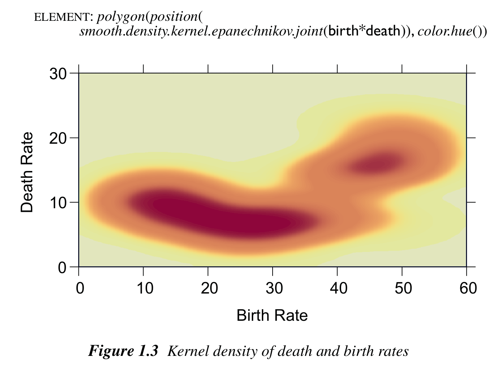
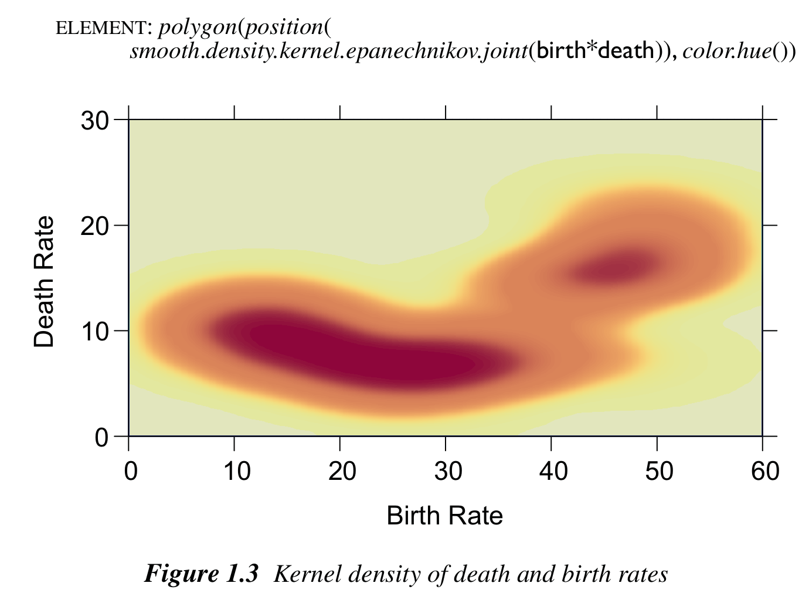
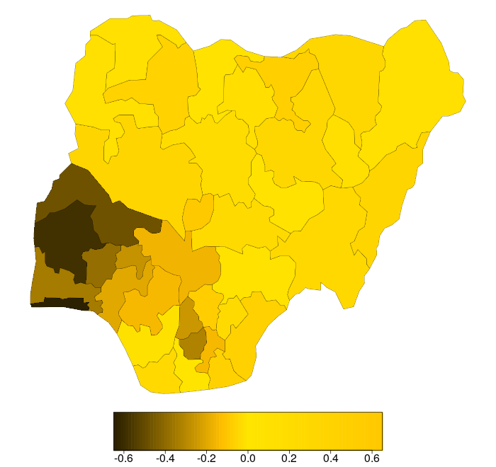
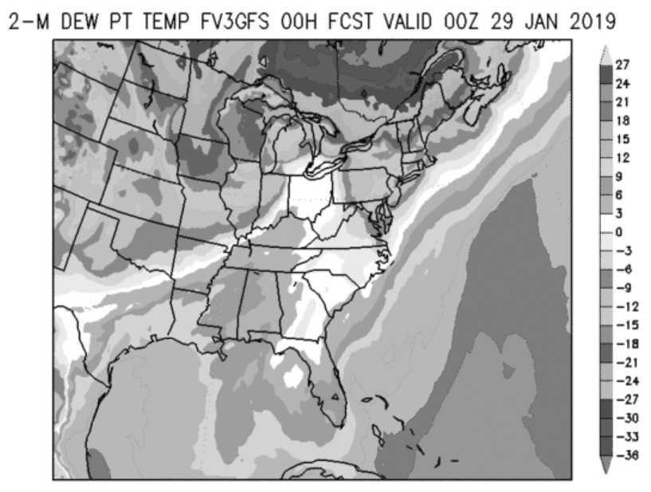
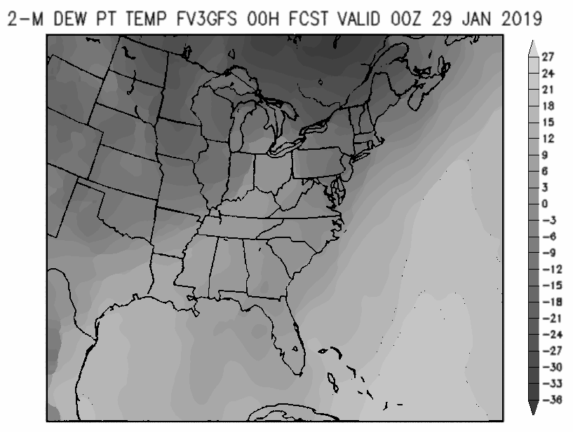
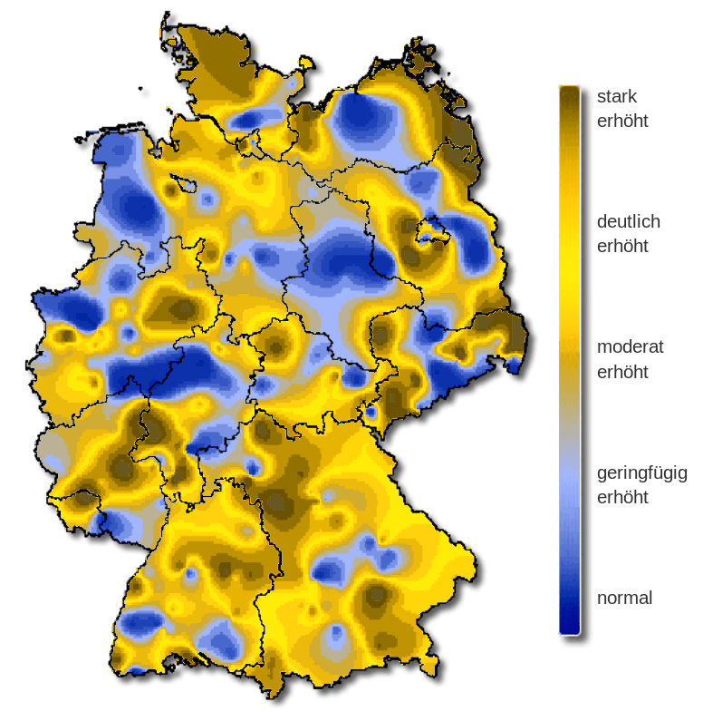

Somewhere over the Rainbow
endrainbow.RmdOverview
The go-to palette in many software packages is - or used to be until rather recently - the so-called rainbow: a palette created by changing the hue in highly-saturated RGB colors. This has been widely recognized as having a number of disadvantages including: abrupt shifts in brightness, misleading for viewers with color vision deficiencies, too flashy to look at for a longer time. See also the article on color vision deficiencies that compares the base R rainbow() with better HCL-based alternatives using demoplot(). Here, we provide further rainbow examples taken from actual publications (rather than simplified demos).
For more details on the limitations of the rainbow palette and further pointers see “The End of the Rainbow” by Hawkins et al. (2014), “Examining Implicit Discretization in Spectral Schemes” by Quinan et al. (2019), or “Somewhere over the Rainbow: How to Make Effective Use of Colors in Meteorological Visualizations” by Stauffer et al. (2015) as well as the #endrainbow hashtag on Twitter.
In a nutshell, the (in-)famous RGB rainbow palette is virtually always a poor choice and properly balanced qualitative, sequential, or diverging palettes - such as the HCL-based color palettes provided here - are preferable. Despite such alternatives becoming more and more widely available the rainbow palette is unfortunately still widely used. Below we illustrate some wild-caught examples, highlight their problems (e.g., by desaturation to grayscale or by emulating color vision deficiencies), and suggest better alternatives.
Would Bob Ross approve?
When you see a (scientific) data visualization with a rainbow, ask yourself: Would Bob Ross approve of this?

Most likely not. In contrast, choosing a HCL-based palette instead will yield less flashy colors that change smoothly…very much in the spirit of The Joy of Painting.
Heatmap from The Grammar of Graphics
Even in the excellent book “The Grammar of Graphics” by Wilkinson (2005), the rainbow palette is used in one of the first figures, depicting a heatmap of a bivariate kernel density estimate. The figure is shown below on the left and is contrasted with an HCL-based sequential heat color palette on the right (sequential_hcl(99, palette = "Heat")).
 

The original palette changes back and forth between dark and light colors and hence high- and low-density regions are difficult to tell apart, especially when desaturated to grayscale. In contrast, the heat colors go from light to dark and still work very well in grayscale.


Similarly, high- and low-density regions are much harder to distinguish for colorblind viewers in the original rainbow palette compared to the heat colors. Below deuteranope vision is emulated.


Map of model deviations
Often a subset of the RGB rainbow palette is used as a “traffic light”, coding “positive” (green) and “negative” (red) deviations from some neutral value (yellow), e.g., forecast errors or other model deviations, correlations, slopes, etc. A typical example is shown below, taken from Figure 5 of Kneib (2006), where deviations from a childhood moratlity model (without spatial effect) for Nigeria are depicted.
The original palette is rainbow(99, start = 0, end = 1/3) (left) and as a better alternative diverging_hcl(99, "Purple-Green") is used. This avoids the flashy colors and uses light gray as the neutral value, making it easier to look at the display for a longer time. Instead of diverging to red/green the palette diverges to purple/green as this works better for colorblind viewers (see below).


Emulating protanope vision most of the green-yellow contrasts in the RGB rainbow are collpased, making the plot very misleading while the HCL-based purple/green palette still works very well for colorblind viewers.

Another important difference between the two palettes is that the HCL-based alternative is completely balanced between the two “arms” of the palette while the rainbow is not. Specifically, the green arm has an almost flat luminance trajectory while the red arm reaches much lower luminances (i.e., darker colors).

Weather map: Precipitation
The shaded weather map below was taken from the web site of the NOAA (National Oceanic and Atmospheric Administration) and it shows a 5-day accumulated precipitation forecast in the United States during the landfall of Hurricane Sandy in 2012. The original color palette (left) is not a classic rainbow but also combines flashy and highly-saturated colors almost everywhere in the palette. For experienced users of this particular product regions with low (vivid green colors) and high (reddish colors) precipitation amounts can be quickly identified. However, it is hard to grasp the message of the figure as a whole.
As an alternative, a proper multi-hue sequential_hcl(13, "Purple-Yellow") palette is used on the right. This has smooth gradients and the overall message can be grasped quickly, giving focus to the high-precipitation regions depicted with dark/colorful colors.


Converting all colors to grayscale brings out even more clearly why the overall picture is so hard to grasp with the original palette: The gradients are discontinuous switching several times between bright and dark. Thus, it is hard to identify the region with the maximum precipitation forecast while this is very natural and straightforward with the HCL-based sequential palette.

Emulating deuteranope vision emphasizes the same problems as the desaturated version above but shows even more problems with the original palette.
Showing changes in hue/chroma/luminance across the two palettes also highlights the discontinuity vs. smoothness of the two palettes.


Weather map: Dewpoint temperature
Another shaded map for communicating a weather forecast is shown below, depicting dewpoint temperature forecasts from a certain FV3 Global Forecast System (GFS) product. It also does not use a standard rainbow but a palette of similarly highly-saturated colors from a wide range of hues (left panel).
As in the previous section, the palette is very discontinuous and breaks the values down into separate “classes” or “bands”. For experienced users this may help locating bands with very specific numeric values but leads to an uneven overall picture. In contrast, the sequential_hcl(23, "ag_Sunset") palette (right panel) shows a smooth gradient, giving somewhat more emphasis to the darker low-temperature regions.


Depicting the hue/chroma/luminance trajectories of both palettes also shows the abrupt changes in the original palette which do not convey a continuous temperature scale. Instead, the HCL-based sunset palette is also built from a wide range of hues but changes hue, chroma, and luminance smoothly.

Consequently, the figure with the sunset palette also works reasonably well in grayscale or for colorblind viewers while the original palette is rather problematic.


Risk map: Influenza
The shaded map below was taken from the web site of the Robert Koch-Institut (Arbeitsgemeinschaft Influenza) and it shows the severity of influenza in Germany in week 8, 2019. The original color palette (left) is the classic rainbow ranging from “normal” (blue) to “strongly increased” (red). As all colors in the palette are very flashy and highly-saturated it is hard to grasp intuitively which areas are most affected by influenza. Also, the least interesting “normal” areas stand out as blue is the darkest color in the palette.
As an alternative, a proper multi-hue sequential_hcl(99, "Purple-Yellow") palette is used on the right. This has smooth gradients and the overall message can be grasped quickly, giving focus to the high-risk regions depicted with dark/colorful colors. However, the extremely sharp transitions between “normal” and “strongly increased” areas (e.g., in the North and the East) might indicate some overfitting in the underlying smoothing for the map.


Converting all colors to grayscale brings out even more clearly why the overall picture is so hard to grasp with the original palette: The gradients are discontinuous switching several times between bright and dark. Thus, it is hard to identify the high-risk regions while this is more natural and straightforward with the HCL-based sequential palette.

Emulating deuteranope vision emphasizes the same problems as the desaturated version above but shows even more problems with the original palette.

Showing changes in hue/chroma/luminance across the two palettes also highlights the discontinuity vs. smoothness of the two palettes.

References
Hawkins, Ed, Doug McNeall, David Stephenson, Jonny Williams, and Dave Carlson. 2014. “The End of the Rainbow – an Open Letter to the Climate Science Community.” http://www.climate-lab-book.ac.uk/2014/end-of-the-rainbow/.
Kneib, Thomas. 2006. “Mixed Model-Based Inference in Geoadditive Hazard Regression for Interval-Censored Survival Times.” Computational Statistics & Data Analysis 51: 777–92. https://doi.org/10.1016/j.csda.2006.06.019.
Quinan, P. S., L. M. Padilla, S. H. Creem-Regehr, and M. Meyer. 2019. “Examining Implicit Discretization in Spectral Schemes.” In Eurographics Conference on Visualization (Eurovis) 2019, edited by M. Gleicher, H. Leitte, and I. Viola, 38:3. John Wiley & Sons. https://vdl.sci.utah.edu/publications/2019_eurovis_implicit-discretization/.
Stauffer, Reto, Georg J. Mayr, Markus Dabernig, and Achim Zeileis. 2015. “Somewhere over the Rainbow: How to Make Effective Use of Colors in Meteorological Visualizations.” Bulletin of the American Meteorological Society 96 (2): 203–16. https://doi.org/10.1175/BAMS-D-13-00155.1.
Wilkinson, Leland. 2005. The Grammar of Graphics. 2nd ed. Springer-Verlag.